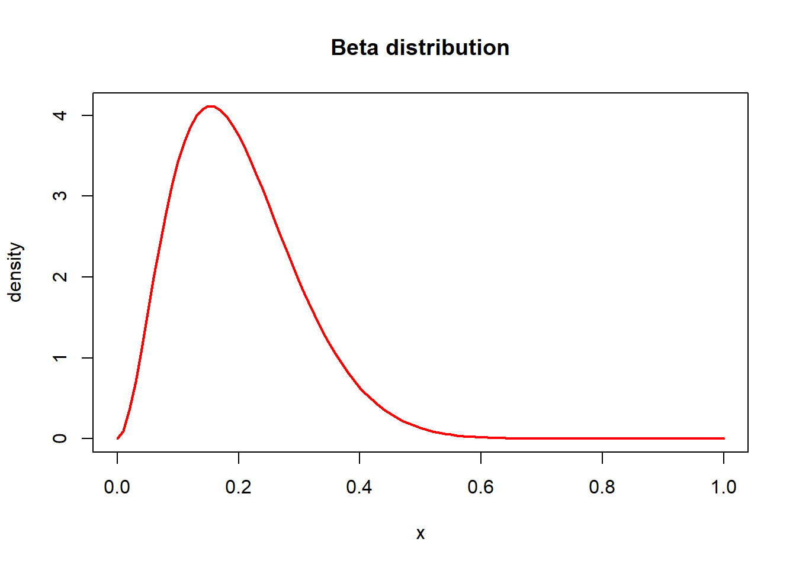
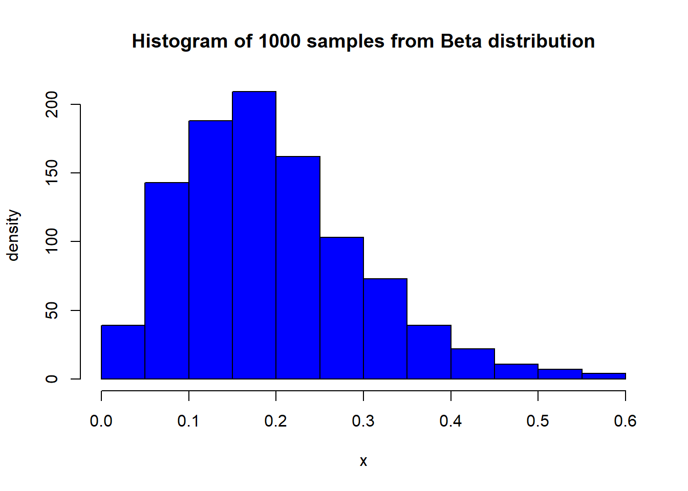

This block will only be visible in your HTML output, but will be hidden when rendering to PDF with quarto for the submission.Make sure that this does not get displayed in the PDF!
This is the template for assignment 1. You can download the qmd-file or copy the code from this rendered document after clicking on </> Code in the top right corner.
Please replace the instructions in this template by your own text, explaining what you are doing in each exercise.
The following will set-up markmyassignment to check your functions at the end of the notebook:
# Useful functions: seq(), plot() and dbeta()curve(dbeta(x, distribution_alpha, distribution_beta), col ="red", lwd =2, ylab ="density", xlab ="x", main ="Beta distribution")

3.2 (b)
Sample and plot the histogram here. Explain in text what you do.
# Useful functions: rbeta() and hist()hist(rbeta(1000, distribution_alpha, distribution_beta), col ="blue", main ="Histogram of 1000 samples from Beta distribution",xlab ="x", ylab ="density")

3.3 (c)
Compute the sample mean and variance here. Explain in text what you do.
# Useful functions: mean() and var()samples <-rbeta(1000, distribution_alpha, distribution_beta)mean(samples)
[1] 0.1991837
var(samples)
[1] 0.01009265
3.4 (d)
Compute the central interval here. Explain in text what you do.
Compute the quantities needed to justify your recommendation here. Explain in text what you do. You can do the computation with pen and paper or in R. Either way, you have to explain why you compute what you compute.
Keep the below name and format for the function to work with markmyassignment:
p_red <-function(boxes) { pA <-0.4 pB <-0.1 pC <-0.5 pRgivenA <- boxes[1,1]/sum(boxes[1,]) pRgivenB <- boxes[2,1]/sum(boxes[2,]) pRgivenC <- boxes[3,1]/sum(boxes[3,])return (pRgivenA*pA + pRgivenB*pB + pRgivenC*pC)# Do computation here, and return as below.# This is the correct return value for the test data provided above.# 0.3928571}
5.2 (b)
Keep the below name and format for the function to work with markmyassignment:
p_box <-function(boxes) {# Do computation here, and return as below.# This is the correct return value for the test data provided above. pA <-0.4 pB <-0.1 pC <-0.5 pRgivenA <- boxes[1,1]/sum(boxes[1,]) pRgivenB <- boxes[2,1]/sum(boxes[2,]) pRgivenC <- boxes[3,1]/sum(boxes[3,]) pR <- pRgivenA*pA + pRgivenB*pB + pRgivenC*pCreturn (c(pRgivenA*pA/pR, pRgivenB*pB/pR, pRgivenC*pC/pR))# c(0.29090909,0.07272727,0.63636364)}
6 Bayes’ theorem 3
6.1 (a)
You will need to change the numbers to the numbers in the exercise.
fraternal_prob =1/125identical_prob =1/300
Keep the below name and format for the function to work with markmyassignment:
p_identical_twin <-function(fraternal_prob, identical_prob) {# Do computation here, and return as below.# This is the correct return value for the test data provided above. pMalegivenFracternal <-0.5 pMalegivenIdentical <-1 pMale <- fraternal_prob * pMalegivenFracternal + identical_prob * pMalegivenIdenticalreturn (identical_prob/pMale)# 0.4545455}p_identical_twin(1/150,1/400)
[1] 0.4285714
7 The three steps of Bayesian data analysis
7.1 (a)
markmyassignment
This block will only be visible in your HTML output, but will be hidden when rendering to PDF with quarto for the submission.Make sure that this does not get displayed in the PDF!
The following will check the functions for which markmyassignment has been set up:
---title: "Assignment 1"author: anonymous # <-- hand in anonymouslyformat: html: toc: true code-tools: true code-line-numbers: true number-sections: true mainfont: Georgia, serif pdf: geometry: - left=1cm,top=1cm,bottom=1cm,right=7cm number-sections: true code-annotations: noneeditor: source---# General information:::: {.content-hidden when-format="pdf"}::: {.callout-warning collapse=false}## Setup*This block will only be visible in your HTML output, but will be hidden when rendering to PDF with quarto for the submission.***Make sure that this does not get displayed in the PDF!**This is the template for [assignment 1](assignment1.html). You can download the [qmd-file](https://avehtari.github.io/BDA_course_Aalto/assignments/template1.qmd) or copy the code from this rendered document after clicking on `</> Code` in the top right corner.**Please replace the instructions in this template by your own text, explaining what you are doing in each exercise.**The following will set-up `markmyassignment` to check your functions at the end of the notebook:```{r}library(markmyassignment)assignment_path =paste("https://github.com/avehtari/BDA_course_Aalto/","blob/master/assignments/tests/assignment1.yml", sep="")set_assignment(assignment_path)```:::::::# Basic probability theory notation and termsWrite your answers here!- probability- probability mass (function)- probability density (function)- probability distribution- discrete probability distribution- continuous probability distribution- cumulative distribution function (cdf)- likelihood# Basic computer skillsDo some setup here. Explain in text what you do.```{r}# Do some setup:distribution_mean = .2distribution_variance = .01distribution_alpha = distribution_mean * ((distribution_mean * (1- distribution_mean) / distribution_variance) -1)distribution_beta = (1- distribution_mean) * ((distribution_mean * (1- distribution_mean) / distribution_variance) -1)```## (a)Plot the PDF here. Explain in text what you do.```{r}# Useful functions: seq(), plot() and dbeta()curve(dbeta(x, distribution_alpha, distribution_beta), col ="red", lwd =2, ylab ="density", xlab ="x", main ="Beta distribution")```## (b)Sample and plot the histogram here. Explain in text what you do.```{r}# Useful functions: rbeta() and hist()hist(rbeta(1000, distribution_alpha, distribution_beta), col ="blue", main ="Histogram of 1000 samples from Beta distribution",xlab ="x", ylab ="density")```## (c)Compute the sample mean and variance here. Explain in text what you do.```{r}# Useful functions: mean() and var()samples <-rbeta(1000, distribution_alpha, distribution_beta)mean(samples)var(samples)```## (d)Compute the central interval here. Explain in text what you do.```{r}# Useful functions: quantile()quantile(samples, c(0.025, 0.975))```# Bayes' theorem 1## (a)Compute the quantities needed to justify your recommendation here. Explain in text what you do.You can do the computation with pen and paper or in R.Either way, you have to explain why you compute what you compute.If you use pen and paper, you can include scans or pictures as follows (see also [assignment_instructions#fig-workflow](assignment_instructions#fig-workflow)):{#fig-workflow width="350"}See @fig-workflow for illustration of parts of Bayesian workflow.# Bayes' theorem 2You will need to change the numbers to the numbers in the exercise.```{r}boxes_test <-matrix(c(2,4,1,5,1,3), ncol =2,dimnames =list(c("A", "B", "C"), c("red", "white")))```## (a)Keep the below name and format for the function to work with `markmyassignment`:```{r}p_red <-function(boxes) { pA <-0.4 pB <-0.1 pC <-0.5 pRgivenA <- boxes[1,1]/sum(boxes[1,]) pRgivenB <- boxes[2,1]/sum(boxes[2,]) pRgivenC <- boxes[3,1]/sum(boxes[3,])return (pRgivenA*pA + pRgivenB*pB + pRgivenC*pC)# Do computation here, and return as below.# This is the correct return value for the test data provided above.# 0.3928571}```## (b)Keep the below name and format for the function to work with `markmyassignment`:```{r}p_box <-function(boxes) {# Do computation here, and return as below.# This is the correct return value for the test data provided above. pA <-0.4 pB <-0.1 pC <-0.5 pRgivenA <- boxes[1,1]/sum(boxes[1,]) pRgivenB <- boxes[2,1]/sum(boxes[2,]) pRgivenC <- boxes[3,1]/sum(boxes[3,]) pR <- pRgivenA*pA + pRgivenB*pB + pRgivenC*pCreturn (c(pRgivenA*pA/pR, pRgivenB*pB/pR, pRgivenC*pC/pR))# c(0.29090909,0.07272727,0.63636364)}```# Bayes' theorem 3## (a)You will need to change the numbers to the numbers in the exercise.```{r}fraternal_prob =1/125identical_prob =1/300```Keep the below name and format for the function to work with `markmyassignment`:```{r}p_identical_twin <-function(fraternal_prob, identical_prob) {# Do computation here, and return as below.# This is the correct return value for the test data provided above. pMalegivenFracternal <-0.5 pMalegivenIdentical <-1 pMale <- fraternal_prob * pMalegivenFracternal + identical_prob * pMalegivenIdenticalreturn (identical_prob/pMale)# 0.4545455}p_identical_twin(1/150,1/400)```# The three steps of Bayesian data analysis## (a):::: {.content-hidden when-format="pdf"}::: {.callout-warning collapse=false}## markmyassignment*This block will only be visible in your HTML output, but will be hidden when rendering to PDF with quarto for the submission.***Make sure that this does not get displayed in the PDF!**The following will check the functions for which `markmyassignment` has been set up:```{r}mark_my_assignment()```:::::::